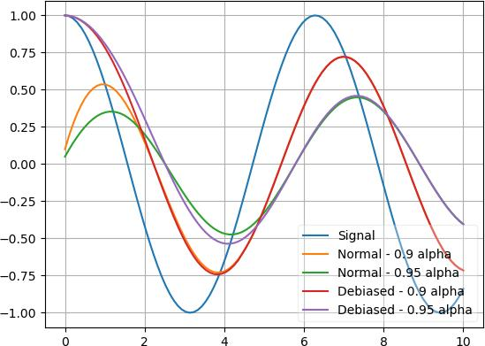

Base module
- k1lib.settings
This is actually an object of type Settings:
Settings:
- displayCutoff = 50 cutoff length when displaying a Settings object
- svgScale = 0.7 default svg scales for clis that displays graphviz graphs
- wd = /home/quang/k1lib/docs default working directory, will get from `os.getcwd()`. Will update using `os.chdir()` automatically when changed
- cancelRun_newLine = True whether to add a new line character at the end of the cancel run/epoch/batch message
- pushNotificationKey = None API key for `k1lib.pushNotification()`. See docs of that for more info
- tempObjLifetime = 60 Default lifetime in seconds used in k1.tempObj()
- startup = <Settings> these settings have to be applied like this: `import k1lib; k1lib.settings.startup.or_patch = False; from k1lib.imports import *` to ensure that the values are set
- init_ray = True whether to connect to ray's cluster accessible locally automatically
- import_optionals = True whether to try to import optional dependencies automatically or not. Set this to False if you want a faster load time, but with reduced functionalities
- or_patch = <Settings> whether to patch __or__() method for several C-extension datatypes (numpy array, dict, etc). This would make cli operations with them a lot more pleasant, but might cause strange bugs. Haven't met them myself though
- numpy = True whether to patch numpy arrays
- dict = True whether to patch Python dict keys and items
- cred = <Settings> general default credentials for other places in the system
- sql = <Settings> anything related to sql, used by k1lib.cli.lsext.sql. See docs for that class for more details
- mode = pg env: K1_SQL_MODE
- host = 127.0.0.1 env: K1_SQL_HOST host name of db server, or db file name if mode='lite'. Warning: mysql's mysqldump won't resolve domain names, so it's best to pass in ip addresses
- port = 3306 env: K1_SQL_PORT
- user = <redacted> env: K1_SQL_USER
- password = <redacted> env: K1_SQL_PASSWORD
- verbose = False if True, will print out all executed queries
- sanitize = False env: K1_SQL_SANITIZE if True, will sanitize all string columns with MarkupSafe
- cache = <Settings> Cache settings for table accesses. I.e table[id]
- size = 3000 env: K1_SQL_CACHE_SIZE Size of the cache, 0 to disable it
- timeout = 1 env: K1_SQL_CACHE_TIMEOUT After this number of seconds, the cached item will expire
- minio = <Settings> anything related to minio buckets, used by k1lib.cli.lsext.minio
- host = https://localhost:9000 env: K1_MINIO_HOST
- access_key = <redacted> env: K1_MINIO_ACCESS_KEY
- secret_key = <redacted> env: K1_MINIO_SECRET_KEY
- redis = <Settings> anything related to redis, used by k1lib.cli.lsext.Redis
- host = localhost env: K1_REDIS_HOST location of the redis server
- port = 6379 env: K1_REDIS_PORT port the redis server use
- expires = 120 env: K1_REDIS_EXPIRES seconds before the message deletes itself. Can be float('inf'), or 'inf' for the env variable
- aes = <Settings> anything related to AES block cipher
- key = <redacted> 16-byte aes key, used in aes_encrypt() and aes_decrypt()
- cli = <Settings> from k1lib.cli module
- defaultDelim = default delimiter used in-between columns when creating tables. Defaulted to tab character.
- defaultIndent = default indent used for displaying nested structures
- strict = False turning it on can help you debug stuff, but could also be a pain to work with
- inf = inf infinity definition for many clis. Here because you might want to temporarily not loop things infinitely
- quiet = False whether to mute extra outputs from clis or not
- arrayTypes = (<class 'torch.Tensor'>, <class 'numpy.ndarray'>) default array types used to accelerate clis
- font = None default font file. Best to use .ttf files, used by toImg()
- smooth = 10 default smooth amount, used in utils.smooth
- atomic = <Settings> classes/types that are considered atomic and specified cli tools should never try to iterate over them
- baseAnd = (<class 'numbers.Number'>, <class 'numpy.number... used by BaseCli.__and__
- typeHint = (<class 'numbers.Number'>, <class 'numpy.number... atomic types used for infering type of object for optimization passes
- deref = (<class 'numbers.Number'>, <class 'numpy.number... used by deref
- llvm = <Settings> settings related to LLVM-inspired optimizer `tOpt`. See more at module `k1lib.cli.typehint`
- k1a = True utilize the supplementary C-compiled library automatically for optimizations
- kjs = <Settings> cli.kjs settings
- jsF = {<class 'str'>: <function <lambda> at 0x7f3609f... All ._jsF() (cli to JS) transpile functions, looks like Dict[type -> _jsF(meta, **kwargs) transpile func]
- jsonF = {<class 'range'>: <function _jsonF_range at 0x7... All ._jsonF() JSON-serialization functions, looks like Dict[type -> _jsonF(obj) func]. See utils.deref.json() docs
- pyF = {} (future feature) All ._pyF() (cli to Python) transpile functions, looks like Dict[type -> _pyF (meta, **kwargs) transpile func]
- cppF = {} (future feature) All ._cppF() (cli to C++) transpile functions, looks like Dict[type -> _cppF (meta, **kwargs) transpile func]
- javaF = {} (future feature) All ._javaF() (cli to Java) transpile functions, looks like Dict[type -> _javaF(meta, **kwargs) transpile func]
- sqlF = {} (future feature) All ._sqlF() (cli to SQL) transpile functions, looks like Dict[type -> _sqlF (meta, **kwargs) transpile func]
- cat = <Settings> inp.cat() settings
- chunkSize = 100000 file reading chunk size for binary+chunk mode. Decrease it to avoid wasting memory and increase it to avoid disk latency
- every = <Settings> profiler print frequency
- text = 1000 for text mode, will print every n lines
- binary = 10 for binary mode, will print every n 100000-byte blocks
- pickle = <Settings> inp.cat.pickle() settings
- RemoteFile = <Settings> inp.RemoteFile() settings, used in cat(), splitSeek() and the like
- memoryLimit = 100000000 if the internal cache exceeds this limit (in bytes), and randomAccess is False, then old downloaded chunks will be deleted
- timeout = 10 seconds before terminating the remote request and retrying
- retries = 10 how many times to retry sending the request before giving up
- applyCl = <Settings> modifier.applyCl() settings
- sudoTimeout = 300 seconds before deleting the stored password for sudo commands
- cpuLimit = None if specified (int), will not schedule more jobs if the current number of assigned cpus exceeds this
- repeat = <Settings> settings related to repeat() and repeatFrom()
- infBs = 100 if dealing with infinite lists, how many elements at a time should be processed?
- chem = <Settings> chemistry-related settings
- imgSize = 200 default image size used in toImg() when drawing rdkit molecules
- toCsv = <Settings> conv.toCsv() settings
- df = False if False, use csv.reader (incrementally), else use pd.read_csv (all at once, might be huge!)
- toLinks = <Settings> conv.toLinks() settings
- splitChars = ['<br>', '<div ', '\n', '\t', '<', '>', ' ', ',... characters/strings to split the lines by, so that each link has the opportunity to be on a separate line, so that the first instance in a line don't overshadow everything after it
- protocols = ['http', 'https', 'ftp'] list of recognized protocols to search for links, like 'http' and so on
- models = <Settings> settings related to k1lib.cli.models
- cuda = None whether to run the models on the GPU or not. True for GPU, False for CPU. None (default) for GPU if available, else CPU
- embed = <Settings>
- model = all-MiniLM-L6-v2 what model to choose from `SentenceTransformer` library
- bs = 512 batch size to feed the model. For all-MiniLM-L6-v2, it seems to be able to deal with anything. I've tried 10k batch and it's still doing good
- generic = <Settings>
- model = google/flan-t5-xl what model to choose from `transformers` library
- bs = 16 batch size to feed the model. For flan-t5-xl, 16 seems to be the sweet spot for 24GB VRAM (RTX 3090/4090). Decrease it if you don't have as much VRAM
- bloom = <Settings> bloom filter settings
- scalable = <Settings> settings for when you don't declare the bloom's capacity ahead of time
- capacity = 1000 initial filter's capacity
- growth = 4 how fast does the filter's capacity grow over time when the capacity is reached
- bio = <Settings> from k1lib.cli.bio module
- blast = None location of BLAST database
- go = None location of gene ontology file (.obo)
- so = None location of sequence ontology file
- lookupImgs = True sort of niche. Whether to auto looks up extra gene ontology relationship images
- phred = !"#$%&'()*+,-./0123456789:;<=>?@ABCDEFGHIJ Phred quality score
- kapi = <Settings> cli.kapi settings
- local = False whether to use local url instead of remote url. This only has relevance to me though, as the services are running on localhost
- ktree = <Settings> cli.ktree module settings
- tok = Special token for internal processing
- sam = <Settings> from k1lib.cli.sam module
- flags = ['PAIRED', 'PROPER_PAIR', 'UNMAP', 'MUNMAP', 'R... list of flags
- header = <Settings> sam headers
- short = ['qname', 'flag', 'rname', 'pos', 'mapq', 'ciga...
- long = ['Query template name', 'Flags', 'Reference seq...
- monkey = <Settings> monkey-patched settings
- fmt = <Settings> from k1lib.fmt module
- separator = True whether to have a space between the number and the unit
- colors = ['#8dd3c7', '#ffffb3', '#bebada', '#fb8072', '#... List of colors to cycle through in fmt.colors()
- k1ui = <Settings> docs related to k1ui java library
- server = <Settings> server urls
- http = http://localhost:9511 normal http server
- ws = ws://localhost:9512 websocket server
- draw = <Settings> drawing settings
- trackHeight = 30 Track's height in Recording visualization
- pad = 10 Padding between tracks
- p5 = <Settings> p5 module settings
- funcs = ['arc', 'ellipse', 'circle', 'line', 'point', '... p5 functions to syntactically replace in instance mode
- symbols = ['mouseX', 'mouseY'] symbols to syntactically replace in instance mode
- kop = <Settings> from k1lib.kop module, for optics-related tools
- colorD = {'rainbow': [400, 650], 'red': [620, 750], 'ora... color wavelength ranges to be used in constructing Rays
- gps = {'BK7': (1.03961212, 0.231792344, 1.01046945, 0... All builtin glass parameters of the system. All have 6 floats, for B1,B2,B3,C1,C2,C3 parameters used in the sellmeier equation: https://en.wikipedia.org/wiki/Sellmeier_equation
- display = <Settings> display settings
- drawable = <Settings> generic draw settings
- axes = True whether to add x and y axes to the sketch
- maxWh = 800 when drawing a sketch, it will be rescaled so that the maximum of width and height of the final image is this number. Increase to make the sketch bigger
- grid = True whether to add grid lines to the sketch
- gridColor = (255, 255, 255)
- rays = <Settings> display settings of kop.Rays
- showOrigin = True whether to add a small red dot to the beginning of the mean (x,y) of a Rays or not
- infLength = 100 length in mm to display Rays if their length is infinite
- surface = <Settings> display settings for kop.Surface class
- showIndex = True whether to show the index of the Surface in an OpticSystem or not
- consts = <Settings> magic constants throughout the sim. By default works pretty well, but you can tweak these if you need unrealistic setups, like super big focal length, etc
- inchForward = 1e-06 after new Rays have been built, inch forward the origin of the new Rays by a this tiny amount so that it 'clears' the last Surface
- eqn = <Settings> from k1lib.eqn module
- spaceBetweenValueSymbol = True
- eqnPrintExtras = True
- cExt = <Settings> k1.compileCExt()-related settings
- includes = ['fstream', 'iostream', 'sstream', 'mutex', 'st... header files to include
- zircon = <Settings> from k1lib.zircon module
- http_server = https://zircon.mlexps.com
- ws_server = wss://ws.zircon.mlexps.com
- conflictDuration = 10 How many seconds does the Extensions need to not take orders from other Python clients before our Python clients can take over? If too high, there won't be any free Extensions left, and if too low, there will be interference with other ppl
- mo = <Settings> from k1lib.mo module
- overOctet = False whether to allow making bonds that exceeds the octet rule
Also, this is exposed automatically, so something like this works:
settings.svgScale = 0.6
Classes
- class k1lib.Learner[source]
Bases:
object- property model
Set this to change the model to run
- property data
Set this to change the data (list of 2 dataloader) to run against.
- property opt
Set this to change the optimizer. If you’re making your own optimizers, beware to follow the PyTorch’s style guide as there are callbacks that modifies optimizer internals while training like
k1lib.schedule.ParamScheduler.
- property cbs
The
Callbacksobject. Initialized to include all the common callbacks. You can set a new one if you want to.
- property css: str
The css selector string. Set this to select other parts of the network. After setting, you can access the selector like this:
l.selectorSee also:
ModuleSelector
- property lossF
Set this to specify a loss function.
- evaluate()[source]
Function to visualize quickly how the network is doing. Undefined by default, just placed here as a convention, so you have to do something like this:
l = k1lib.Learner() def evaluate(self): xbs, ybs, ys = self.Recorder.record(1, 3) plt.plot(torch.vstack(xbs), torch.vstack(ys)) l.evaluate = partial(evaluate(l))
- __call__(xb, yb=None)
Executes just a small batch. Convenience method to query how the network is doing.
- Parameters:
xb – x batch
yb – y batch. If specified, return (y, loss), else return y alone
- static load(fileName: str = None)
Loads a
Learnerfrom a file. See also:save(). Example:# this will load up learner in file "skip1_128bs.pth" l = k1.Learner.load("skip1_128bs")
- Parameters:
fileName – if empty, then will prompt for file name
- run(epochs: int, batches: int = None)
Main run function.
- Parameters:
epochs – number of epochs to run. 1 epoch is the length of the dataset
batches – if set, then cancels the epoch after reaching the specified batch
- static sample() Learner
Creates an example learner, just for simple testing stuff anywhere. The network tries to learn the function y=x. Only bare minimum callbacks are included.
- save(fileName: str = None)
Saves this
Learnerto file. See also:load(). Does not save thedataobject, because that’s potentially very big. Example:l = k1.Learner() # saves learner to "skip1_128bs.pth" and model to "skip1_128bs.model.pth" l.save("skip1_128bs")
- Parameters:
fileName – name to save file into
- class k1lib.Object[source]
Bases:
objectConvenience class that acts like
defaultdict. You can use it like a normal object:a = k1lib.Object() a.b = 3 print(a.b) # outputs "3"
__repr__()output is pretty nice too:<class '__main__.Object'>, with attrs: - b
You can instantiate it from a dict:
a = k1lib.Object.fromDict({"b": 3, "c": 4}) print(a.c) # outputs "4"
And you can specify a default value, just like defaultdict:
a = k1lib.Object().withAutoDeclare(lambda: []) a.texts.extend(["factorio", "world of warcraft"]) print(a.texts[0]) # outputs "factorio"
Warning
Default values only work with variables that don’t start with an underscore “_”.
Treating it like defaultdict is okay too:
a = k1lib.Object().withAutoDeclare(lambda: []) a["movies"].append("dune") print(a.movies[0]) # outputs "dune"
- property state: dict
Essentially
__dict__, but only outputs the fields you defined. If your framework intentionally set some attributes, those will be reported too, so beware
- class k1lib.Range(start=0, stop=None)[source]
Bases:
objectA range of numbers. It’s just 2 numbers really: start and stop
This is essentially a convenience class to provide a nice, clean abstraction and to eliminate errors. You can transform values:
Range(10, 20).toUnit(13) # returns 0.3 Range(10, 20).fromUnit(0.3) # returns 13 Range(10, 20).toRange(Range(20, 10), 13) # returns 17
You can also do random math operations on it:
(Range(10, 20) * 2 + 3) == Range(23, 43) # returns True Range(10, 20) == ~Range(20, 10) # returns True
- __getitem__(index)[source]
0 for start, 1 for stop
You can also pass in a
sliceobject, in which case, a range subset will be returned. Code kinda looks like this:range(start, stop)[index]
- __init__(start=0, stop=None)[source]
Creates a new Range.
There are different
__init__functions for many situations:Range(2, 11.1): create range [2, 11.1]
Range(15.2): creates range [0, 15.2]
Range(Range(2, 3)): create range [2, 3]. This serves as sort of a catch-all
Range(slice(2, 5, 2)): creates range [2, 5]. Can also be a
rangeRange(slice(2, -1), 10): creates range [2, 9]
Range([1, 2, 7, 5]): creates range [1, 5]. Can also be a tuple
- toUnit(x)[source]
Converts x from current range to [0, 1] range. Example:
r = Range(2, 10) r.toUnit(5) # will return 0.375, as that is (5-2)/(10-2)
You can actually pass in a lot in place of x:
r = Range(0, 10) r.toUnit([5, 3, 6]) # will be [0.5, 0.3, 0.6]. Can also be a tuple r.toUnit(slice(5, 6)) # will be slice(0.5, 0.6). Can also be a range, or Range
Note
In the last case, if
startis None, it gets defaulted to 0, and ifendis None, it gets defaulted to 1
- fromUnit(x)[source]
Converts x from [0, 1] range to this range. Example:
r = Range(0, 10) r.fromUnit(0.3) # will return 3
x can be a lot of things, see
toUnit()for more
- toRange(_range: Range, x)[source]
Converts x from current range to another range. Example:
r = Range(0, 10) r.toRange(Range(0, 100), 6) # will return 60
x can be a lot of things, see
toUnit()for more.
- static proportionalSlice(r1, r2, r1Slice: slice) Tuple[Range, Range][source]
Slices r1 and r2 proportionally. Best to explain using an example. Let’s say you have 2 arrays created from a time-dependent procedure like this:
a = []; b = [] for t in range(100): if t % 3 == 0: a.append(t) if t % 5 == 0: b.append(1 - t) len(a), len(b) # returns (34, 20)
a and b are of different lengths, but you want to plot both from 30% mark to 50% mark (for a, it’s elements 10 -> 17, for b it’s 6 -> 10), as they are time-dependent. As you can probably tell, to get the indicies 10, 17, 6, 10 is messy. So, you can do something like this instead:
r1, r2 = Range.proportionalSlice(Range(len(a)), Range(len(b)), slice(10, 17))
This will return the Ranges [10, 17] and [5.88, 10]
Then, you can plot both of them side by side like this:
fig, axes = plt.subplots(ncols=2) axes[0].plot(r1.range_, a[r1.slice_]) axes[1].plot(r2.range_, a[r2.slice_])
- class k1lib.Domain(*ranges, dontCheck: bool = False)[source]
Bases:
object- __init__(*ranges, dontCheck: bool = False)[source]
Creates a new domain.
- Parameters:
ranges – each element is a
Range, although any format will be fine as this selects for thatdontCheck – don’t sanitize inputs, intended to boost perf internally only
A domain is just an array of
Rangethat represents what intervals on the real number line is chosen. Some examples:inf = float("inf") # shorthand for infinity Domain([5, 7.5], [2, 3]) # represents "[2, 3) U [5, 7.5)" Domain([2, 3.2], [3, 8]) # represents "[2, 8)" as overlaps are merged -Domain([2, 3]) # represents "(-inf, 2) U [3, inf)", so essentially R - d, with R being the set of real numbers -Domain([-inf, 3]) # represents "[3, inf)" Domain.fromInts(2, 3, 6) # represents "[2, 4) U [6, 7)"
You can also do arithmetic on them, and check “in” oeprator:
Domain([2, 3]) + Domain([4, 5]) # represents "[2, 3) U [4, 5)" Domain([2, 3]) + Domain([2.9, 5]) # represents "[2, 5)", also merges overlaps Domain([2, 3]) & Domain([2.5, 5]) # represents "[2, 3) A [2.5, 5)", or "[2.5, 3)" 3 in Domain([2, 3]) # returns False 2 in Domain([2, 3]) # returns True
- class k1lib.AutoIncrement(initialValue: int = -1, n: int = inf, prefix: str = None)[source]
Bases:
object- __init__(initialValue: int = -1, n: int = inf, prefix: str = None)[source]
Creates a new AutoIncrement object. Every time the object is called it gets incremented by 1 automatically. Example:
a = k1lib.AutoIncrement() a() # returns 0 a() # returns 1 a() # returns 2 a.value # returns 2 a.value # returns 2 a() # returns 3 a = AutoIncrement(n=3, prefix="cluster_") a() # returns "cluster_0" a() # returns "cluster_1" a() # returns "cluster_2" a() # returns "cluster_0"
- Parameters:
n – if specified, then will wrap around to 0 when hit this number
prefix – if specified, will yield strings with specified prefix
- static random() AutoIncrement[source]
Creates a new AutoIncrement object that has a random integer initial value
- property value
Get the value as-is, without auto incrementing it
- class k1lib.ConfinedAutoIncrement(maxValue=16)[source]
Bases:
object- __init__(maxValue=16)[source]
Similar to
AutoIncrement, but this time the yielded numbers become cyclical, and in [0, maxValue). The applications for this class is rather niche, as I need it only for a hardware project that require strict id generation:a = ConfinedAutoIncrement(4) a() # returns 1 a() # returns 2 a() # returns 3 a.remove(2) a() # returns 0 a() # returns 2 a() # throws an error as it ran out of elements to yield
- Parameters:
maxValue – max value that can be yielded
- class k1lib.Wrapper(value=None)[source]
Bases:
object- __init__(value=None)[source]
Creates a wrapper for some value and get it by calling it. Example:
a = k1.Wrapper(list(range(int(1e7)))) # returns [0, 1, 2, 3, 4, 5, 6, 7, 8, 9] a()[:10]
This exists just so that Jupyter Lab’s contextual help won’t automatically display the (possibly humongous) value. Could be useful if you want to pass a value by reference everywhere like this:
o = k1.Wrapper(None) def f(obj): obj.value = 3 f(o) o() # returns 3
You can also pipe into it like this:
o = 3 | k1.Wrapper() o() # returns 3
- class k1lib.Every(n)[source]
Bases:
object
- class k1lib.RunOnce[source]
Bases:
object- __init__()[source]
Returns False first time only. Example:
r = k1lib.RunOnce() r.done() # returns False r.done() # returns True r.done() # returns True r.revert() r.done() # returns False r.done() # returns True r.done() # returns True
May be useful in situations like:
class A: def __init__(self): self.ro = k1lib.RunOnce() def f(self, x): if self.ro.done(): return 3 + x return 5 + x a = A() a.f(4) # returns 9 a.f(4) # returns 7
- class k1lib.MaxDepth(maxDepth: int, depth: int = 0)[source]
Bases:
object
- class k1lib.MovingAvg(initV: float = 0, alpha=0.9, debias=False)[source]
Bases:
object- __init__(initV: float = 0, alpha=0.9, debias=False)[source]
Smoothes out sequential data using momentum. Example:
a = k1lib.MovingAvg(5) a(3).value # returns 4.8, because 0.9*5 + 0.1*3 = 4.8 a(3).value # returns 4.62
There’s also a cli at
toMovingAvgthat does the exact same thing, but just more streamlined and cli-like. Both versions are kept as sometimes I do want a separate object with internal stateDifference between normal and debias modes:
x = torch.linspace(0, 10, 100); y = torch.cos(x) | op().item().all() | deref() plt.plot(x, y); a = k1lib.MovingAvg(debias=False); plt.plot(x, y | apply(lambda y: a(y).value) | deref()) a = k1lib.MovingAvg(debias=True); plt.plot(x, y | apply(lambda y: a(y).value) | deref()) plt.legend(["Signal", "Normal", "Debiased"])
As you can see, normal mode still has the influence of the initial value at 0 and can’t rise up fast, whereas the debias mode will ignore the initial value and immediately snaps to the first saved value.
- Parameters:
initV – initial value
alpha – number in [0, 1]. Basically how much to keep old value?
debias – whether to debias the initial value
- class k1lib.Absorber(initDict: dict = {})[source]
Bases:
objectCreates an object that absorbes every operation done on it. Could be useful in some scenarios:
ab = k1lib.Absorber() # absorbs all operations done on the object abs(ab[::3].sum(dim=1)) t = torch.randn(5, 3, 3) # returns transformed tensor of size [2, 3] ab.ab_operate(t)
Another:
ab = Absorber() ab[2] = -50 # returns [0, 1, -50, 3, 4] ab.ab_operate(list(range(5)))
Because this object absorbs every operation done on it, you have to be gentle with it, as any unplanned disturbances might throw your code off. Best to create a new one on the fly, and pass them immediately to functions, because if you’re in a notebook environment like Jupyter, it might poke at variables.
For extended code example that utilizes this, check over
k1lib.cli.modifier.opsource code.- __init__(initDict: dict = {})[source]
Creates a new Absorber.
- Parameters:
initDict – initial variables to set, as setattr operation is normally absorbed
- ab_solidify()[source]
Use this to not absorb
__call__operations anymore and makes it feel like a regular function (still absorbs other operations though):f = op()**2 3 | f # returns 9, but may be you don't want to pipe it in f.op_solidify() f(3) # returns 9
- ab_operate(x)[source]
Special method to actually operate on an object and get the result. Not absorbed. Example:
# returns 6 (op() * 2).ab_operate(3)
- ab_fastF()[source]
Returns a function that operates on the input (just like
ab_operate()), but much faster, suitable for high performance tasks. Example:f = (k1lib.Absorber() * 2).ab_fastF() # returns 6 f(3)
- class k1lib.Settings(**kwargs)[source]
Bases:
object- __init__(**kwargs)[source]
Creates a new settings object. Basically fancy version of
dict. Example:s = k1lib.Settings(a=3, b="42") s.c = k1lib.Settings(d=8) s.a # returns 3 s.b # returns "42" s.c.d # returns 8 print(s) # prints nested settings nicely
- context(**kwargs)[source]
Context manager to temporarily modify some settings. Applies to all sub-settings. Example:
s = k1lib.Settings(a=3, b="42", c=k1lib.Settings(d=8)) with s.context(a=4): s.c.d = 20 s.a # returns 4 s.c.d # returns 20 s.a # returns 3 s.c.d # returns 8
- add(k: str, v: Any, docs: str = '', cb: Callable[[Settings, Any], None] = None, sensitive: bool = False, env: str = None) Settings[source]
Long way to add a variable. Advantage of this is that you can slip in extra documentation for the variable. Example:
s = k1lib.Settings() s.add("a", 3, "some docs") print(s) # displays the extra docs
You can also specify that a variable should load from the environment variables:
s = k1lib.Settings() s.add("a", "/this/path/will:/be/overridden", env="PATH") s.a # will returns a string that might look like "/usr/local/sbin:/usr/local/bin:/usr/sbin:/usr/bin:/sbin:/bin:/usr/games:/usr/local/games"
You can specify a transform function if you want to:
s = k1lib.Settings() s.add("a", ["/this/path/will", "/be/overridden"], env=("PATH", lambda x: x.split(":"))) s.a # returns a list that might look like ['/usr/local/sbin', '/usr/local/bin', '/usr/sbin', '/usr/bin', '/sbin', '/bin', '/usr/games', '/usr/local/games']
- Parameters:
cb – callback that takes in (settings, new value) if any property changes
sensitive – if True, won’t display the value when displaying the whole Settings object
env – if specified, will try to load up the value from environment variables if it’s available
- class k1lib.UValue(mean=0, std=1, N=None)[source]
Bases:
object- __init__(mean=0, std=1, N=None)[source]
Creates a new “uncertain value”, which has a mean and a standard deviation. You can then do math operations on them as normal, and the propagation errors will be automatically calculated for you. Make sure to run the calculation multiple times as the mean and std values fluctuates by a little run-by-run. Example:
# returns UValue(mean=4.7117, std=3.4736) object abs(k1lib.UValue() * 5 + 3)
You can also instantiate from an existing list/numpy array/pytorch tensor:
# returns UValue(mean=24.5, std=14.431) object k1lib.UValue.fromSeries(range(50))
You can also do arbitrary complex math operations:
# returns UValue(mean=0.5544, std=0.4871) (20 + k1lib.UValue()).f(np.sin) # same as above, but takes longer to run! (20 + k1lib.UValue()).f(math.sin)
I suggest you to make your arbitrary function out of numpy’s operations, as those are a fair bit faster than regular Python.
If you have a list of
UValue, and want to plot them with error bars, then you can do something like this:x = np.linspace(0, 6) y = list(np.sin(x)*10) | apply(k1lib.UValue) | toList() plt.errorbar(x, *(y | transpose()));
There are several caveats however:
Note
First is the problem of theoretically vs actually sample a distribution. Let’s see an example:
# returns theoretical value UValue(mean=8000.0, std=1200.0) -> 8000.0 ± 1200.0 k1lib.UValue(20) ** 3 # prints out actual mean and std value of (8064.1030, 1204.3529) a = k1lib.UValue(20).sample() ** 3 print(a.mean(), a.std())
So far so good. However, let’s create some uncertainty in “3”:
# returns theoretical value UValue(mean=8000.0, std=23996.0) -> 10000.0 ± 20000.0 k1lib.UValue(20) ** k1lib.UValue(3) # prints out actual mean and std value of (815302.8750, 27068828.), but is very unstable and changes a lot a = k1lib.UValue(20).sample() ** k1lib.UValue(3).sample() print(a.mean(), a.std())
Woah, what happens here? The actual mean and std values are completely different from the theoretical values. This is mainly due to UValue(3) has some outlier values large enough to boost the result up multiple times. Even removing 1% of values on either end of the spectrum does not quite work. So, becareful to interpret these uncertainty values, and in some case the theoretical estimates from math are actually very unstable and will not be observed in real life.
Note
Then there’s the problem of each complex operation, say
(v*2+3)/5will be done step by step, meaninga=v*2mean and std will be calculated first, then ignoring the calculated sample values and just go with the mean and std, sample a bunch of values from there and calculatea+3mean and std. Rinse and repeat. This means that these 2 statements may differ by a lot:# prints out (0.15867302766786406, 0.12413313456900205) x = np.linspace(-3, 3, 1000); sq = (abs(x)-0.5)**2; y = sq*np.exp(-sq) print(y.mean(), y.std()) # returns UValue(mean=0.081577, std=0.32757) -> 0.1 ± 0.3 x = k1lib.UValue(0, 1); sq = (abs(x)-0.5)**2; y = sq*(-sq).f(np.exp)
Why this weird function? It converts from a single nice hump into multiple complex humps. Anyway, this serves to demonstrate that the result from the
calculate -> get mean, std -> sample from new distribution -> calculateprocess might be different from just calculating from start to end and then get the mean and std.Note
Lastly, you might have problems when using the same UValue multiple times in an expression:
a = UValue(10, 1) a * 2 # has mean 20, std 2 a + a # has mean 20, std 1.4
- Parameters:
N – how many data points in this sample
- sample(n=100, _class=0)[source]
Gets a sample
numpy.ndarrayrepresentative of this uncertain value. Example:# returns tensor([-5.1095, 3.3117, -2.5759, ..., -2.5810, -1.8131, 1.8339]) (k1lib.UValue() * 5).sample()
- static fromSeries(series, ddof=0)[source]
Creates a
UValuefrom a bunch of numbers- Parameters:
series – can be a list of numbers, numpy array or PyTorch tensor
unbiased – if True, Bessel’s correction will be used
- static fromBounds(min_, max_)[source]
Creates a
UValuefrom min and max values. Example:# returns UValue(mean=2.5, std=0.5) k1lib.UValue.fromBounds(2, 3)
- property exact
Whether this UValue is exact or not
- f(func)[source]
Covered in
__init__()docs
- static combine(*values, samples=1000)[source]
Combines multiple UValues into 1. Example:
a = k1lib.UValue(5, 1) b = k1lib.UValue(7, 1) # both returns 6.0 ± 1.4 k1lib.UValue.combine(a, b) [a, b] | k1lib.UValue.combine()
This will sample each UValue by default 1000 times, put them into a single series and get a UValue from that. Why not just take the average instead? Because the standard deviation will be less, and will not actually reflect the action of combining UValues together:
# returns 6.0 ± 0.7, which is narrower than expected (a + b) / 2
- class k1lib.ConstantPad(left=False)[source]
Bases:
object- __init__(left=False)[source]
Adds constant amount of padding to strings. Example:
p = k1.ConstantPad() p("123") # returns "123" p("23") # returns " 23" "12345" | p # returns "12345", can pipe it in too, but is not strictly a cli tool p("123") # returns " 123"
Basically, this is useful in situations when you’re printing a table or status bar and needs relatively constant width but you don’t know what’s the desired width at the start.
As you normally use a bunch of these in groups, there’s a convenience function for that too:
p1, p2 = k1.ConstantPad.multi(2)
- Parameters:
left – whether to align left or not
- class k1lib.AutoUpdateValue(genF, every=10)[source]
Bases:
object- __init__(genF, every=10)[source]
Value that is auto updated every specified number of seconds. This is to perform periodic calculations that are heavy, but packaged in a nice and clean format. Example:
v = k1.AutoUpdateValue(lambda: 3) v.value # returns 3 def trouble(): raise Exception("Something went wrong") v = AutoUpdateValue(trouble) v.exc # returns "<class 'Exception'>\ue004Something went wrong" v.tb # returns traceback as string
See also:
k1.preload. It’s a similar concept, but slightly differentHonestly this is kind of niche, as I’d normally use
k1.croninstead, as it has a nice management plane in flask- Parameters:
genF – function to generate the value
every – refresh period
- class k1lib.Aggregate(processF, refreshPeriod=10, verbose: bool = None)[source]
Bases:
object- __init__(processF, refreshPeriod=10, verbose: bool = None)[source]
Aggregates a bunch of data together, then after a predetermined period of time runs a processing function taking in all the saved data. Example:
sums = [] def processF(xs): sums.append(sum(xs)) a = Aggregate(processF, 3) for i in range(10): a.append(i); time.sleep(1) sums # returns [3, 12, 21] time.sleep(3); sums # returns [3, 12, 21, 9]
This is useful to batch together requests and send them to other places in one go. You can also reject some elements if they’re not ready to be processed and it will be placed right back in the queue:
processed = [] def processF(xs): processed.extend(xs[3:]); return xs[:3] a = Aggregate(processF, 3) for i in range(10): a.append(i); time.sleep(1) processed # returns [3, 4, 5, 6, 7, 8] time.sleep(3); processed # returns [3, 4, 5, 6, 7, 8, 9]
See also:
TimeSeries()
- class k1lib.Perlin(mean, std, step=0.1, guide=10)[source]
Bases:
object- __init__(mean, std, step=0.1, guide=10)[source]
Generates random-looking noise that might look like it came from sensor data. Example:
k1.Perlin(25, 5, 0.01) | head(1000) | deref() | aS(plt.plot) # generates list[float] of length 1000 and plots it out a = k1.Perlin(25, 5, 0.01); [a(), a(), a()] # samples it sequentially, returns list[float]
- class k1lib.cron(f=None, delay=None, kw=None, name=None, docs=None, daemon=False, delayedStart=0)[source]
Bases:
object- stop = '_k1.cron.stopSignal'
- __init__(f=None, delay=None, kw=None, name=None, docs=None, daemon=False, delayedStart=0)[source]
Sets up a cron job in another thread, running the decorated function in 2 modes:
Mode 1: whenever
fgoes from False to True. It’s activated whendelayis not specified. Example:@k1.cron(lambda minute: minute == 0) def f1(): # runs every hour ... # do some stuff @k1.cron(lambda second: second % 5 == 0) def f2(): # runs every 5 seconds ... # do some stuff
So, the first function will run every hour, and the second function will run every 5 seconds. Pretty straightforward. The timing function
fcan be as complicated as you want, but it can only accept the following parameters:year
month: 1-12
day: 1-31
weekday: 0-6, 0 for Monday
hour: 0-23
minute: 0-59
second: 0-59
Mode 2: every
delayseconds. It’s activated whendelayis specified. Example:@k1.cron(delay=10) def f1(): # runs every 10 seconds ... # do some stuff
Theres a special sentinel
k1.cron.stopthat when returns, it terminates the cron loop, for both modes. Example:@k1.cron(delay=10) def f1(): # only prints out "abc" once print("abc") return k1.cron.stop
You can also get a python object describing past runs, stdout and errors by doing
k1.cron.allDataYou can also quickly deploy a management plane to manage all cron jobs:
app = flask.Flask(__name__) k1.cron.flask(app) app.run(host="0.0.0.0", port=80)
See more about this at
flask()- Parameters:
f – function to trigger wrapped function when this transitions from False to True
delay – if specified, just run the function repeatedly, delayed by this amount after running. Mutually exclusive with .f
kw – extra keyword arguments to pass to the function
name – optional name to show up in
allData()docs – optional documentation to show up in
allData()daemon – if True, makes the cron thread daemon
delayedStart – if specified, delay the start of the first function execution to after this number of seconds
- static flask(app, **kwargs)[source]
Attaches a cron management plane to a flask app. Example:
app = flask.Flask(__name__) k1.cron.flask(app) app.run(host="0.0.0.0", port=80)
Then, you can access the route “/k1/cron” to see an overview of all cron jobs
- Parameters:
app – flask app object
kwargs – extra random kwargs that you want to add to
app.route()function
- class k1lib.cache(maxsize=128, timeout=60, name=None, docs=None)[source]
Bases:
object- __init__(maxsize=128, timeout=60, name=None, docs=None)[source]
Like functools.lru_cache, but with timeout period. Example:
@k1.cache(timeout=10) def slow_function(x): return x * 2
You can also quickly deploy a management plane to manage all caches:
app = flask.Flask(__name__) k1.cache.flask(app) app.run(host="0.0.0.0", port=80)
See more about this at
flask()- Parameters:
maxsize – max size of the cache
timeout – timeout in seconds
- static flask(app, **kwargs)[source]
Attaches a cache management plane to a flask app. Example:
app = flask.Flask(__name__) k1.cache.flask(app) app.run(host="0.0.0.0", port=80)
Then, you can access the route “/k1/cache” to see an overview of all caches
- Parameters:
app – flask app object
kwargs – extra random kwargs that you want to add to
app.route()function
- class k1lib.preload(refreshTime=10, inactiveTime=60, maxsize=128, name=None, docs=None)[source]
Bases:
object- __init__(refreshTime=10, inactiveTime=60, maxsize=128, name=None, docs=None)[source]
Wraps a function and pre executes that function every once in a while if the function is being used. Example:
@k1.preload(timeout=10) def slow_func(x): time.sleep(0.1); return x * 2 slow_func(3) # takes 100ms time.sleep(4); slow_func(3) # takes 2us time.sleep(4); slow_func(3) # takes 2us time.sleep(4); slow_func(3) # takes 2us time.sleep(4); slow_func(3) # takes 2us time.sleep(15); slow_func(3) # takes 100ms
Normally, you don’t have to use this, use
cacheinstead. This is for those scenarios where you can’t afford to have any delays, ascachewill sometime take quite a while to run, but most of the time it runs fast.With this decorator, if you use the function frequent enough (less than
inactiveTime), then you will never experience any kind of delays, no matter how infrequent. This is good for generating plots that don’t change for a long time, but requires fast server response all the time.- Parameters:
refreshTime – how often to refresh the internal cache to make content fresh?
inactiveTime – how long before a function’s argument considered inactive and will stop refreshing automatically
maxsize – maximum size of the internal cache. See also
cache
- class k1lib.TimeSeries(name: str = None, fn: str = None, storeRaw: bool = True, retention: int = 604800, coldStore: bool = False)[source]
Bases:
object- __init__(name: str = None, fn: str = None, storeRaw: bool = True, retention: int = 604800, coldStore: bool = False)[source]
Manages time series data, compresses them, back them up on disk if necessary. Example:
ts1 = k1.TimeSeries(name="ts1") ts1.append(3, 4, 5) # do this anywhere you'd like. This saves 1 data point containing 3 floats to the sqlite database for i in range(600): # deposits 600 samples over 1 minute time span ts1.append(random.random(), random.random(), random.random()) time.sleep(0.1) ts1.getRaw() # returns something like [[1737213223.4139452, (3, 4, 5)], ...] ts1.getRate() # returns something like [(1737213313.0752494, 10.066128035852211), ...] ts1.getPert() # returns something like [[1737213568.9260075, [(0.009, 0.07, 0.47, 0.89, 0.99), (0.001, 0.11, 0.56, 0.90, 0.99), (0.0006, 0.08, 0.46, 0.89, 0.99)]], ...]
For
getRate(), first number is the timestamp, second is the number of data points/second. ForgetPert(), this will return the percentiles of the input data (0%, 10%, 50%, 90%, 100%) for each variableWhy does this functionality exists? Well, it’s because managing time series usually involves a lot of pain. You need to setup a time series database like Prometheus, or Postgresql to be extra simple. But setting up all that infrastructure takes a lot of effort, and again, if it’s hard, you won’t do it, or will be incentivised not to do it. So this class is meant to be an object that manages time series data. It manages it in such a way so that you can spam this all over the place and get lots of functionalities right out of the box, without an external server. All data is stored in several tables inside a sqlite file. Each time series gets its own sqlite file. Some performance numbers to keep in mind:
Data write speed: 100k data points/s
Data read speed: 400k data points/s
Disk space used: 50 bytes/data point for small amounts of variables (say ~3)
Other features include the ability to auto delete old data so as not to accumulate over time. When old data is deleted, there’s also an option to save the deleted data in a separate file for cold storage, so that it’s more efficient storage-wise than sqlite, but harder to access. Cold storage space used: 14 + nVars * 4. This is 5x smaller than sqlite for 3 variables
There will be scans every 10 seconds on another thread, that compresses the raw data into a usable form. If there’s too few data points (<20 data points), then it will skip that scan cycle. Data (refined and raw) will be saved into a sqlite database, stored at the specified file name
fn. If no file name is specified, then this will create a temp file and turn that into a sqlite database.For every method, you can also specify an index number:
ts1 = k1.TimeSeries(name="ts1") ts1.appendIdx(2, 3, 4, 5) # index 2 with 3 values (3, 4, 5) ts1.getRaw(idx=2) # returns all data points with idx=2, something like [[1737213223.4139452, (3, 4, 5)], ...] ts1.getPert(idx=2) # returns all percentiles with idx=2, something like [[1737213568.9260075, [(0.009, 0.07, 0.47, 0.89, 0.99), (0.001, 0.11, 0.56, 0.90, 0.99), (0.0006, 0.08, 0.46, 0.89, 0.99)]], ...]
This is useful in situations like when you have lots of sensors for different devices. Then each idx can be the device id, and so you can store lots of variables in 1 go for 1 specific device. Then you can query the time series later on for 1 specific device only.
You can get all TimeSeries via
allData().Note
Performance details
This is a more detailed section going over what actually happens underneath in case you care about performance. Everything is stored in sqlite. If file name is not given, then it still uses sqlite, but in memory instead.
When a new .append() happens, no database interaction happens at all. It’s simply just appended to a totally normal, internal list, so <1us. Then there are 2 background threads to help collate and store the data. One is fast (10s scan) and one is slow (60s scan). The fast one distributes new data points to 3 internal stacks, “rawRaw”, “rateRaw” and “pertD”. If rawRaw has any elements, it will be stored in sqlite. If rateRaw has at least 10 elements, it will calculate the rate and store in sqlite. If pertD (indexed by idx) has at least 100 elements, it will calculate percentiles and store in sqlite.
This architecture has several ramifications:
Time taken to execute .append() is very fast
If no .append() are called for a long time, no sqlite queries will be executed
If too little .append() are called, data might not show up in rate and percentile views at all
Might have to wait for at least 10 seconds before .getRaw() has the newest data
If python process exited, there may still be data stored in memory that’s not recorded on sqlite yet
For the second loop, it grabs all rows from sqlite that was longer than
retentionseconds ago, compresses them to an efficient binary format, then appends to the cold storage file. My code is not as bulletproof as sqlite, but still works fine. Because the loop is very slow, it shouldn’t affect performance much.- Parameters:
name – just for cosmetic, to remind you what this does
fn – sqlite file name to store this time series data. If not specified, then stores database in memory
storeRaw – whether to store raw data points
retention – seconds before deleting old data point permanently, default 1 week
coldStore – if True, when data points past retention time, it will be packed into a single binary file for cold storage
- getRaw(startTime: int = None, stopTime: int = None, idx: int = 0, limit: int = 1000000)[source]
Grabs raw data of this time series. Returns something like
[[1737213223.4139452, (3, 4, 5)], ...]
- getRate(startTime: int = None, stopTime: int = None, limit: int = 10000)[source]
Grabs data ingest rate of this time series. Returns something like
[(1737213313.0752494, 10.066128035852211), ...]
- getPert(startTime: int = None, stopTime: int = None, idx: int = 0, limit: int = 10000)[source]
Grabs data percentiles of this time series. Returns something like
[[1737213568.9260075, [(0.009, 0.07, 0.47, 0.89, 0.99), (0.001, 0.11, 0.56, 0.90, 0.99), (0.0006, 0.08, 0.46, 0.89, 0.99)]], ...]
- static flask(app, **kwargs)[source]
Attaches a TimeSeries management plane to a flask app. Example:
app = flask.Flask(__name__) k1.TimeSeries.flask(app) app.run(host="0.0.0.0", port=80)
Then, you can access the route “/k1/ts” to see an overview of all TimeSeries
- Parameters:
app – flask app object
kwargs – extra random kwargs that you want to add to
app.route()function
- class k1lib.speed(name=None, fn=None, docs=None, coldStore=False)[source]
Bases:
BaseCli- __init__(name=None, fn=None, docs=None, coldStore=False)[source]
Tracks and benchmarks certain functions, and monitor them through time with reports in order to deploy them absolutely everywhere. Example:
@k1.speed(name="some func description") def f(x): return x*3
You can get a list of all speed k1.TimeSeries objects via
k1.TimeSeries.allData- Parameters:
name – optional name to show up in
allData()fn – file name. If specified, will store speed data in sqlite database at this path, else store in memory
docs – optional docs to show up in
allData()coldStore – if True, stores old speed data in condensed binary file. See more at
TimeSeries
- static flask(app, **kwargs)[source]
Attaches a speed management plane to a flask app. Example:
app = flask.Flask(__name__) k1.speed.flask(app) app.run(host="0.0.0.0", port=80)
Then, you can access the route “/k1/speed” to see an overview of all speed benchmarks. However, doing
k1.TimeSeries.flask(app)and access at “/k1/ts” would be more beneficial, as that contains all the graphs and data- Parameters:
app – flask app object
kwargs – extra random kwargs that you want to add to
app.route()function
- class k1lib.wrapMod(m, moduleName=None)[source]
Bases:
object- __init__(m, moduleName=None)[source]
Wraps around a module, and only suggest symbols in __all__ list defined inside the module. Example:
from . import randomModule randomModule = wrapMod(randomModule)
- Parameters:
m – the imported module
moduleName – optional new module name for elements (their __module__ attr)
Context managers
- class k1lib.captureStdout(out=True, c=False)[source]
Bases:
Captures every print() statement. Taken from https://stackoverflow.com/questions/16571150/how-to-capture-stdout-output-from-a-python-function-call. Example:
with k1lib.captureStdout() as outer: print("something") with k1lib.captureStdout() as inner: print("inside inner") print("else") # prints "['something', 'else']" print(outer.value) # prints "['inside inner']" print(inner.value)
Note that internally, this replaces
sys.stdoutasio.StringIO, so might not work property if you have fancybytesstuff going on. Also, carriage return (\r) will erase the line, so multi-line overlaps might not show up correctly.If you wish to still print stuff out, you can do something like this:
with k1.captureStdout() as out: print("abc") # gets captured out.print("def") # not captured, will actually print out # you can also access the stream like this print("something", file=out.old)
Also, by default, this won’t work if you’re trying to capture C library’s output, because they write to stdout directly, instead of going through Python’s mechanism. You can capture it down at the C level by doing this:
with captureStdout() as out1, captureStdout(c=True) as out2: os.system("ls") # gets captured by out2, but not out1 print("abc") # gets captured by out1, but not out2
It’s a little bit hard to actually integrate C mode and non-C mode together, so for the time being, you gotta have 2 context managers if you want to capture absolutely everything, C or not.
- Parameters:
out – if True, captures stdout, else captures stderr
c – whether to capture at the C/C++ level or not
- class k1lib.capturePlt[source]
Bases:
Tries to capture matplotlib plot. Example:
x = np.linspace(-2, 2) with k1.capturePlt() as fig: plt.plot(x, x**2) plt.show() capturedImage = fig() # reference it here
This is a convenience function to deal with libraries that call
plt.show()and doesn’t let us intercept at the middle to generate an image.
- class k1lib.ignoreWarnings[source]
Bases:
Context manager to ignore every warning. Example:
import warnings with k1lib.ignoreWarnings(): warnings.warn("some random stuff") # will not show anything
Exceptions
These exceptions are used within Learner to cancel things early on.
If you raise CancelBatchException while passing through the model,
the Learner will catch it, run cleanup code (including checkpoint
endBatch ), then proceeds as usual.
If you raise something more major, like CancelRunException,
Learner will first catch it at batch level, run clean up code, then
rethrow it. Learner will then recatch it at the epoch level, run
clean up code, then rethrow again. Same deal at the run level.
Functions
- k1lib.patch(_class: type, name: str = None, docs: str | Any = None, static=False)[source]
Patches a function to a class/object.
- Parameters:
_class – object to patch function. Can also be a type
name – name of patched function, if different from current
docs – docs of patched function. Can be object with defined __doc__ attr
static – whether to wrap this inside
staticmethodor not
- Returns:
modified function just before patching
Intended to be used like this:
class A: def methA(self): return "inside methA" @k1lib.patch(A) def methB(self): return "inside methB" a = A() a.methB() # returns "inside methB"
You can do
@propertyattributes like this:class A: pass @k1lib.patch(A, "propC") @property def propC(self): return self._propC @k1lib.patch(A, "propC") @propC.setter def propC(self, value): self._propC = value a = A(); a.propC = "abc" a.propC # returns "abc"
The attribute name unfortunately has to be explicitly declared, as I can’t really find a way to extract the original name. You can also do static methods like this:
class A: pass @k1lib.patch(A, static=True) def staticD(arg1): return arg1 A.staticD("def") # returns "def"
- k1lib.squeeze(_list: list | tuple | Any, hard=False)[source]
If list only has 1 element, returns that element, else returns original list.
- Parameters:
hard – If True, then if list/tuple, filters out None, and takes the first element out even if that list/tuple has more than 1 element
- k1lib.limitLines(s: str, limit: int = 10) str[source]
If input string is too long, truncates it and adds ellipsis
- k1lib.limitChars(s: str, limit: int = 50)[source]
If input string is too long, truncates to first limit characters of the first line
- k1lib.showLog(loggerName: str = '', level: int = 10)[source]
Prints out logs of a particular logger at a particular level
- k1lib.beep(seconds=0.3)[source]
Plays a beeping sound, may be useful as notification for long-running tasks
- k1lib.dontWrap()[source]
Don’t wrap horizontally when in a notebook. Normally, if you’re displaying something long, like the output of
print('a'*1000)in a notebook, it will display it in multiple lines. This may be undesirable, so this solves that by displaying some HTML with css styles so that the notebook doesn’t wrap.
- k1lib.debounce(wait, threading=False)[source]
Decorator that will postpone a function’s execution until after
waitseconds have elapsed since the last time it was invoked. Taken from ipywidgets. Example:import k1lib, time; value = 0 @k1lib.debounce(0.5, True) def f(x): global value; value = x**2 f(2); time.sleep(0.3); f(3) print(value) # prints "0" time.sleep(0.7) print(value) # prints "9"
- Parameters:
wait – wait time in seconds
threading – if True, use multiple threads, else just use async stuff
- k1lib.now()[source]
Convenience function for returning a simple time string, with timezone and whatnot.
- k1lib.pushNotification(title='Some title', content='Some content', url='https://k1lib.com')[source]
Sends push notification to your device.
Setting things up: - Download this app: https://play.google.com/store/apps/details?id=net.xdroid.pn - Set the settings.pushNotificationKey key obtained from the app. Example key: k-967fe9… - Alternatively, set the environment variable k1lib_pushNotificationKey instead - Run the function as usual
- k1lib.ticks(x: float, y: float, rounding: int = 6)[source]
Get tick locations in a plot that look reasonable. Example:
ticks(-5, 40) # returns [-10.0, -5.0, 0.0, 5.0, 10.0, 15.0, 20.0, 25.0, 30.0, 35.0, 40.0, 45.0] ticks(0.05, 0.07) # returns [0.05, 0.0525, 0.055, 0.0575, 0.06, 0.0625, 0.065, 0.0675, 0.07, 0.0725] ticks(-5, 5) # returns [-6.0, -5.0, -4.0, -3.0, -2.0, -1.0, 0.0, 1.0, 2.0, 3.0, 4.0, 5.0, 6.0]
So essentially, whenever you try to plot something, you want both the x and y axis to not have too many lines, and that the tick values snap to a nice number.
Normally you don’t have to do this, as matplotlib does this automatically behind the scenes, but sometimes you need to implement plotting again, in strange situations, so this function comes in handy
- Parameters:
x – start of interval
y – end of interval
rounding – internally, it rounds tick values to this number of digits, to fix tiny float overflows that make numbers ugly. So you can disable it if you’re working with really small numbers
- k1lib.perlin3d(shape=(100, 100, 100), res=(2, 2, 2), tileable=(False, False, False), interpolant=<function interpolant>)[source]
Generate a 3D numpy array of perlin noise. Not my code! All credits go to the author of this library: https://github.com/pvigier/perlin-numpy
- Parameters:
shape – The shape of the generated array (tuple of three ints). This must be a multiple of res.
res – The number of periods of noise to generate along each axis (tuple of three ints). Note shape must be a multiple of res.
tileable – If the noise should be tileable along each axis (tuple of three bools). Defaults to (False, False, False).
interpolant – The interpolation function, defaults to t*t*t*(t*(t*6 - 15) + 10).
- Returns:
A numpy array of shape shape with the generated noise.
- Raises:
ValueError – If shape is not a multiple of res.
- k1lib.digraph()[source]
Convenience method for creating a new graphviz Digraph. Example:
g = k1lib.graph() g("a", "b", "c") g # displays arrows from "a" to "b" and "a" to "c"
- k1lib.tempObj(x, timeout=None)[source]
Stores an object that’s meant to exist for a short amount of time, and then will be automatically deleted. Example:
key = k1.tempObj("Suika Ibuki", 10) # stores some string that will only last for 10 seconds k1.tempObj(key) # returns "Suika Ibuki" time.sleep(20) k1.tempObj(key) # returns None
The default timeout value is 60 seconds, configurable in
settings.tempObjLifetime
- k1lib.aes_encrypt(plaintext: bytes, key: bytes = None) str[source]
Encrypts a message using AES. Example:
res = k1.aes_encrypt(b"some message") # can return '3HV7PKKQL2DLWQWBBTETQTXNMC4Q6DJ2FSS73A7NCRAX6K4ZZKXQ====' k1.aes_descrypt(res) # returns b"some message"
After encrypting, this is encoded using base32, ready to be used in urls. This function is a convenience function meant for small messages here and there, and is not intended for heavy duty encryption.
The key is automatically generated, and is configurable via
settings.cred.aes.keySee also:
aes_encrypt_json()- Parameters:
plaintext – plaintext to encrypt
key – 128 bit key, if not specified then will auto generate one on library load at
settings.cred.aes.key
- k1lib.aes_decrypt(ciphertext: str, key: bytes = None) bytes[source]
Decrypts a message using AES. See
aes_encrypt()for more information.- Parameters:
ciphertext – ciphertext to decrypt
key – 128 bit key, if not specified then will auto generate one on library load at
settings.cred.aes.key
- k1lib.aes_encrypt_json(obj: dict) str[source]
Encrypts a Python object using AES. Example:
a = k1.aes_encrypt_json({"a": 3}) k1.aes_decrypt_json(a) # returns {"a": 3} k1.aes_decrypt_json(k1.aes_encrypt_json([1, 2, 3])) # returns [1, 2, 3] k1.aes_decrypt_json(k1.aes_encrypt_json("abc")) # returns "abc"
See also:
aes_encrypt()
- k1lib.modbusCrc(msg: list[int]) list[int][source]
Calculates Modbus CRC-16 checksum for a given message. Example:
k1.modbusCrc([0x01, 0x03, 0x00, 0x1e, 0x00, 0x01]) # returns (228, 12), or (0xe4, 0x0c)
- k1lib.parseTimeStr(timeStr)[source]
Parses time string and returns 2 unix timestamps. Example:
now = time.time() k1.parseTimeStr("3 minute") # returns [now - 3*60, now] k1.parseTimeStr("3 min") # returns [now - 3*60, now] k1.parseTimeStr("1 hour") # returns [now - 3600, now] k1.parseTimeStr("2.3 hour") # returns [now - 3600*2.3, now]
You get the idea. This is useful in quickly parsing time series graphs between a time period in the past and now. There are a bunch of period strings with their corresponding multiplier:
1, second # second, sec 60, minute # minute, min 3600, hour # hour, hr 86400, day # day 7 * 86400, week # week, wk 30* 86400, month # month, mo 365.25*86400, year # year, yr 365.25*864000, decade # decade, dec
Fastest to access are the shortest period strings, like “sec”, “min”, etc. Use those if you care about speed.
Unfortunately, this function can’t parse composite time strings, like “1 hr 5 min”
- Parameters:
timeStr – time string to parse
- k1lib.compileCExt(cppCode, moduleName, verbose=False)[source]
Conveniently compiles a python C extension module and returns it. Example:
mod = k1.compileCExt(""" // pure math func, simple data types double func1(double x) { for (int i = 0; i < 1000000; i++) x = std::cos(x); return x; } // takes in array double func2(std::vector<double>& arr) { double sum = 0; for (auto v : arr) sum += v; return sum; } // returns array std::vector<int> func3(int x, int n) { std::vector<int> ans; for (int i = 0; i < n; i++) ans.push_back(x+i); return ans; } // nested arrays std::vector<std::vector<int>> func4(int x, int n) { std::vector<std::vector<int>> ans; std::vector<int> ans1, ans2; for (int i = 0; i < n; i++) ans1.push_back(x+i); for (int i = 0; i < n; i++) ans2.push_back(x+i*2); ans.push_back(ans1); ans.push_back(ans2); return ans; } // complex string manipulation, splitting things like "A,3\nB,4", std::vector<std::pair<std::string, int>> std::vector<std::pair<std::string, int>> func5(std::string text) { std::vector<std::pair<std::string, int>> ans; std::string line; std::istringstream f(text); std::pair<std::string, int> pair; while (std::getline(f, line)) { int pos = line.find(","); pair.first = line.substr(0, pos); pair.second = std::stoi(line.substr(pos+1)); ans.push_back(pair); } return ans; } PYBIND11_MODULE(genM1, m) { m.def("func1", &func1); m.def("func2", &func2); m.def("func3", &func3); m.def("func4", &func4); m.def("func5", &func5); }""", "genM1", verbose=True) # this takes around 15s to run. Yes it's slow, but it works # python-equivalent functions def func1(x): for i in range(1000000): x = math.cos(x) return x def func2(arr): return sum(arr) def func3(x, n): return [x+i for i in range(n)] def func4(x, n): return [[x+i for i in range(n)], [x+i*2 for i in range(n)]] def func5(s): return [(x, int(y)) for x,y in [x.split(",") for x in s.split("\n")]] mod.func1(3) # 22.8 ms ± 1.83 ms, 7.6x faster func1(3) # 174 ms ± 24.1 ms x = list(range(100)) mod.func2(x) # 7.25 μs ± 761 ns, 3.1x slower func2(x) # 2.33 μs ± 299 ns mod.func3(3, 10) # 1.16 μs ± 97 ns, 1.2x slower func3(3, 10) # 946 ns ± 128 ns mod.func4(3, 10) # 2.23 μs ± 188 ns, 1.25x faster func4(3, 10) # 2.78 μs ± 292 ns s = "A,3\nB,4\nC,5\nD,6\nE,7\nF,8\nG,9" mod.func5(s) # 4.5 μs ± 286 ns, 1.07x faster func5(s) # 4.81 μs ± 866 ns
Behind the scenes, this function generates a C source file, compiles it into a python C extension module, then loads it in the current interpreter session. So purpose of this is to very quickly drop down to C whenever the need arises. Solutions like Cython is neat and all, but it’s quite awkward to code in, and doesn’t have the full power of C++. Meanwhile, doing it like this gives you full C++ features, as well as an easy python binding interface via pybind11.
Several header files are included by default, so you don’t have to include them, like <string>, <fstream>, etc. A list of them are in
settings.cExt.includes. You can get a dict of all compiled modules viak1.compileCExt.mods()Also, as you can see from the tiny benchmark results, it’s not always faster to use the C version, if input and output translation operations takes longer than the function itself. So although there’s a lot of potential for speedups, you have to be really careful about this, or else you risk slowing it down and wasting a bunch of time.
- Parameters:
cppCode – C++ source code. Common headers are included
moduleName – name of the module
Higher order functions
- k1lib.polyfit(x: List[float], y: List[float], deg: int = 6) Callable[[float], float][source]
Returns a function that approximate \(f(x) = y\). Example:
xs = [1, 2, 3] ys = [2, 3, 5] f = k1.polyfit(xs, ys, 1)
This will create a best-fit function. You can just use it as a regular, normal function. You can even pass in
numpy.ndarray:# returns some float f(2) # plots fit function from 0 to 5 xs = np.linspace(0, 5) plt.plot(xs, f(xs))
- Parameters:
deg – degree of the polynomial of the returned function
- k1lib.derivative(f: Callable[[float], float], delta: float = 1e-06) Callable[[float], float][source]
Returns the derivative of a function. Example:
f = lambda x: x**2 df = k1lib.derivative(f) df(3) # returns roughly 6
- k1lib.optimize(f: Callable[[float], float], v: float = 1, threshold: float = 1e-06, **kwargs) float[source]
Given \(f(x) = 0\), solves for x using Newton’s method with initial value v. Example:
f = lambda x: x**2-2 # returns 1.4142 (root 2) k1lib.optimize(f) # returns -1.4142 (negative root 2) k1lib.optimize(f, -1)
Interestingly, for some reason, result of this is more accurate than
derivative().
- k1lib.inverse(f: Callable[[float], float]) Callable[[float], float][source]
Returns the inverse of a function. Example:
f = lambda x: x**2 fInv = k1lib.inverse(f) # returns roughly 3 fInv(9)
Warning
The inverse function takes a long time to run, so don’t use this where you need lots of speed. Also, as you might imagine, the inverse function isn’t really airtight. Should work well with monotonic functions, but all bets are off with other functions.
- k1lib.integral(f: Callable[[float], float], _range: Range) float[source]
Integrates a function over a range. Example:
f = lambda x: x**2 # returns roughly 9 k1lib.integral(f, [0, 3])
There is also the cli
integratewhich has a slightly different api.
- k1lib.batchify(period=0.1) singleFn[source]
Transforms a function taking in batches to taking in singles, for performance reasons.
Say you have this function that does some heavy computation:
def f1(x, y): time.sleep(1) # simulating heavy load, like loading large libraries/binaries return x + y # does not take lots of time
Let’s also say that a lot of time, you want to execute that function over multiple samples:
res = [] # will be filled with [3, 7, 11] for x, y in [[1, 2], [3, 4], [5, 6]]: res.append(f1(x, y))
This would take 3 seconds to complete. But a lot of time, it might be advantageous to merge them together and execute everything all at once:
def f2(xs, ys): res = []; time.sleep(1) # loading large libraries/binaries only once for x, y in zip(xs, ys): res.append(x+y) # run through all samples quickly return res res = f2([1, 3, 5], [2, 4, 6]) # filled with [3, 7, 11], just like before
But, may be you’re in a multithreaded application and desire the original function “f1(x, y)”, instead of the batched function “f2(xs, ys)”, like running an LLM (large language model) on requests submitted by people on the internet. Each request that comes in runs on different threads, but it’s still desirable to pool together all of those requests, run through the model once, and then split up the results to each respective request. That’s where this functionality comes in:
@k1.batchify(0.1) # pool up all calls every 0.1 seconds def f2(xs, ys): ... # same as previous example @k1.batchify # can also do it like this. It'll default to a period of 0.1 def f2(xs, ys): ... # same as previous example res = [] t1 = threading.Thread(target=lambda: res.append(f(1, 2))) t2 = threading.Thread(target=lambda: res.append(f(3, 4))) t3 = threading.Thread(target=lambda: res.append(f(5, 6))) ths = [t1, t2, t3] for th in ths: th.start() for th in ths: th.join() # after this point, res will have a permutation of [3, 7, 11] (because t1, t2, t3 execution order is not known)
This will take on average 1 + 0.1 seconds (heavy load execution time + refresh rate). You can decorate this on any Flask endpoint you want and it will just work:
@app.get("/run/<int:nums>") @k1.batchify(0.3) def run(nums): time.sleep(1) # long running process return nums | apply("x**2") | apply(str) | deref()
Now, if you send 10 requests within a window of 0.3s, then the total running time would only be 1.3s, instead of 10s like before